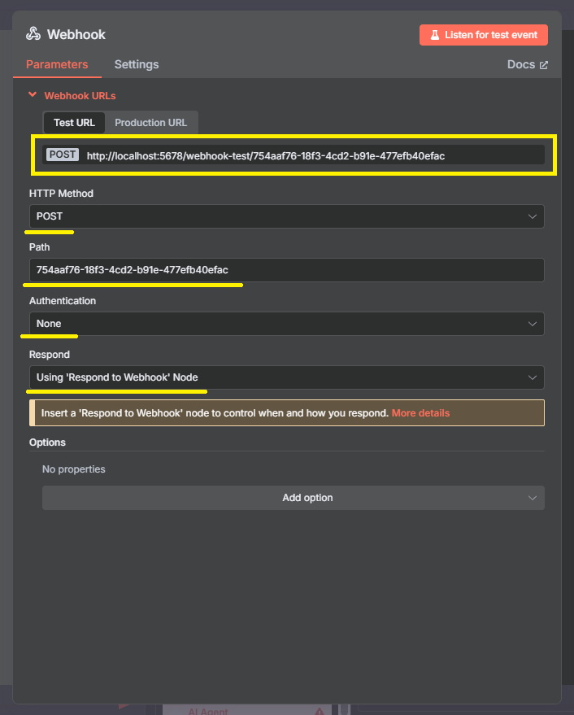
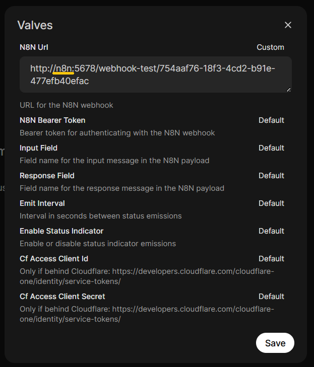
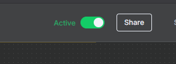
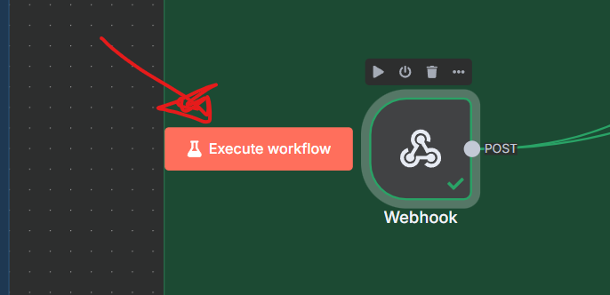

Requisitos Previos
Actualización del Sistema
sudo apt update
sudo apt upgrade
Instalación de Python
sudo apt install python python3-pip python3-venv
Instalación de Docker
sudo apt install docker.io
sudo systemctl enable docker
sudo systemctl start docker
docker --version
Instalación de Docker-Compose
sudo curl -L "https://github.com/docker/compose/releases/latest/download/docker-compose-$(uname -s)-$(uname -m)" -o /usr/local/bin/docker-compose
sudo chmod +x /usr/local/bin/docker-compose
docker-compose --version
Puesta en Marcha
Clonación del Repositorio
git clone git@github.com:danunziata/pps-kevin_haponiuk-2025.git
cd pps-kevin_haponiuk-2025/src/self-hosted-ai-starter-kit
Ejecución con Docker Compose
El proyecto soporta dos perfiles de ejecución según el hardware disponible:
| Perfil | Comando |
|---|---|
| CPU | docker compose --profile cpu up |
| GPU NVIDIA (recomendado) | docker compose --profile gpu-nvidia up |
Descarga de Modelos en Ollama
# Acceder al contenedor de Ollama
docker exec -it ollama bash
# Descargar modelos necesarios
ollama run llama3.1:8b
ollama run gemma3:1b
ollama run qwen3:8b
ollama pull nomic-embed-text
Nota: Al finalizar cada ejecución de modelo, salir con /bye.
Configuración de Servicios
N8N
- Acceder a http://localhost:5678
- Configurar credenciales locales:
- Email: prueba@gmail.com
- First Name: Prueba
- Last Name: Prueba
- Password: Prueba123
- Verificar que aparezca el workflow "Agent-AI-PPS_Kevin-Haponiuk"... Si no aparece, importar desde:
pps-kevin_haponiuk-2025/src/self-hosted-ai-starter-kit/n8n/backup/workflows/Agent-AI-PPS_Kevin-Haponiuk.json
Credenciales de Google
Configurar las credenciales de Google siguiendo la guía de instalación.
Verificación de GROBID
- Prueba desde navegador: http://localhost:8070/api/isalive debe retornar
true - Prueba desde N8N: Ejecutar el bloque "TEST GROBID" para verificar la conectividad
Procesamiento de Datos
Carga de Información
- Configurar la carpeta de PDFs en el bloque "Search all Content"
- Ejecutar el workflow "CARGA DE INFORMACIÓN" en N8N
- Verificar la carga en http://localhost:6333/dashboard#/collections
Configuración de PostgreSQL
Obtener la IP del servicio de postgres:
docker inspect -f '{{range .NetworkSettings.Networks}}{{.IPAddress}}{{end}}' self-hosted-ai-starter-kit-postgres-1
Configurar credenciales del nodo de Postgres en N8N:
- Host: [IP obtenida]
- Database: n8n
- Username: root
- Password: password
PgAdmin (Opcional)
- Acceder a http://localhost:5050/
- Login: admin@admin.com / admin
- Agregar nuevo servidor con la IP de postgres y mismos parámetros utilizados en el punto anterior.
Consulta al Agente
Existen dos formas de interactuar con el agente:
- Chat directo: Usar el bloque "when chat message received" en N8N
- Webhook con OpenWebUI: Configurar integración externa
Configuración de OpenWebUI
Para poder hacer la consulta al agente mediante el bloque webhook, debemos configurar el servicio de OpenWebUI.
-
Acceder a OpenWebUI: Ir a
http://localhost:3000y logearse con un mail y password. -
Crear nueva función: Ir abajo a la izquierda y entrar al Admin Panel → Functions y crear una nueva función.
-
Código de la función: Copiar el siguiente código en la función:
# Código completo disponible en: src/self-hosted-ai-starter-kit/n8n-pipeline-function.py -
Configurar parámetros: Configure los siguientes parámetros en la función creada:
- Nombre: "N8N Pipeline"
- Descripción: "Pipeline para interactuar con N8N"
-
Acceder al bloque Webhook: En N8N, localice y configure el bloque Webhook de la siguiente manera (copie el Test URL generado):

En las configuraciones de la función, utilice la URL copiada de N8N y realice el siguiente cambio:
- Reemplace
localhostpor el nombre del contenedor de N8N (en este caso "n8n") - Mantenga el resto de configuraciones en valores por defecto

Activar el workflow: Active el workflow en N8N para comenzar a recibir solicitudes:

Configurar escucha: Configure el workflow para escuchar y recibir respuestas externas:

Verificación Final
Una vez completados todos los pasos anteriores, ya puede realizar consultas al agente directamente desde n8n o desde Open WebUI.
Visualización de métricas
cAdvisor (Métricas Raw)
- URL:
http://localhost:8081 - Qué ver: Lista de contenedores y métricas básicas
- No requiere configuración
Prometheus (Base de Datos de Métricas)
- URL:
http://localhost:9090 - Qué ver: Interfaz de consultas PromQL
- No requiere configuración inicial
Grafana (Dashboards)
- URL:
http://localhost:3001 - Usuario:
admin - Contraseña:
admin
A continuación se explica cómo configurar Grafana agregando Prometheus como Fuente de Datos
- Ir a
http://localhost:3001 - Login con
admin/admin - Ir a Configuration → Data Sources
- Click en Add data source
- Seleccionar Prometheus
- URL:
http://prometheus:9090 - Click en Save & Test
Luego se debe Importar un Dashboard
- Ir a Dashboards → Import
- Usar ID:
19908o893 - Seleccionar Prometheus como fuente de datos
- Click en Import
🛑 Detener la ejecución
# Para perfil CPU
docker compose --profile cpu down
# Para perfil GPU NVIDIA
docker compose --profile gpu-nvidia down
Puertos Utilizados
| Servicio | Puerto |
|---|---|
| N8N | 5678 |
| Ollama | 11434 |
| PgAdmin | 5050 |
| Qdrant | 6333 |
| Qdrant Search | 5000 |
| PostgreSQL | 5432 |
| OpenWebUI | 3000 |
| Grobid | 8070 |
| Cadvisor | 8081 |
| Prometheus | 9090 |
| Grafana | 3001 |